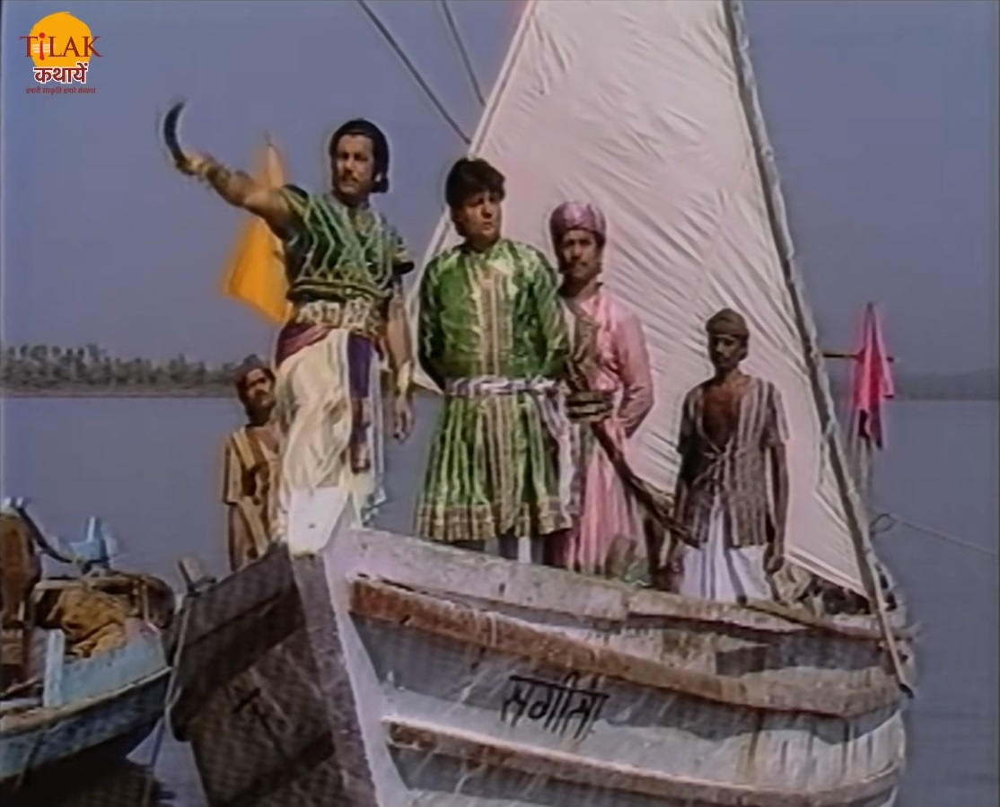
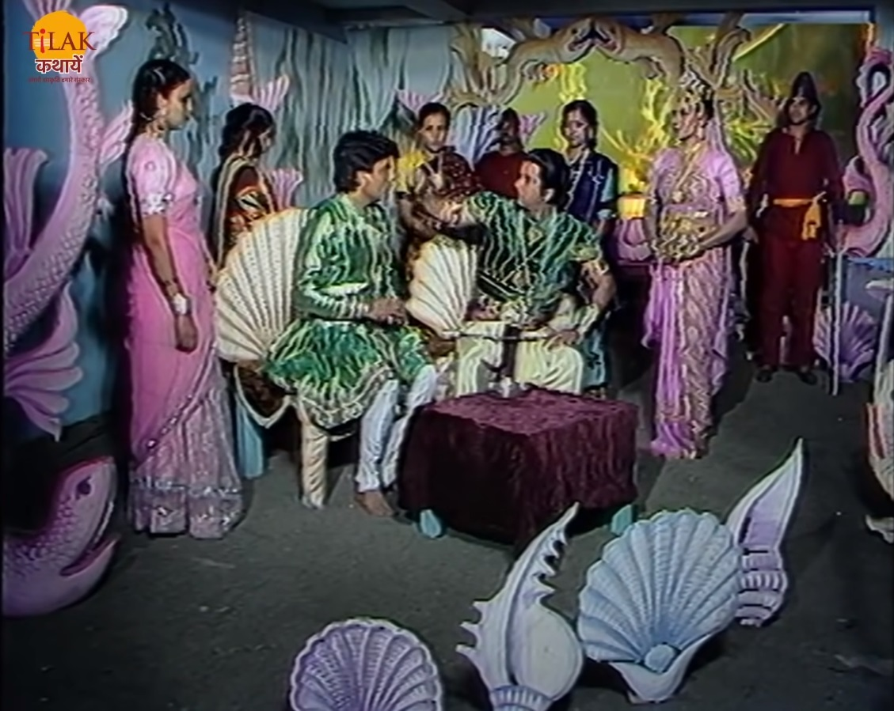

| बेताल को विक्रम फिर से पकड़ कर साधु के पास ले चलता है। बेताल विक्रम को फिर से एक कहानी सुनता है। समुद्र किनारे एक ताम्रलिपि नाम का एक नगर था जिसमें सप्तशिल नाम का एक युवक रहता था जो आपने लिए राजा चंद्र सेन के रोज़गार खोज रहा था। सप्तशिल राजा से मिल नहीं पा रहा था एक दिन राजा शिकार खेलने जा रहे थे तो सप्तशिल राजा से मिलने का मौक़ा देख कर उनके पीछे पीछे जाता है। सप्तशिल राजा की पीछे पीछे उनके पास पहुँच कर राजा को अकेले देख कर उनसे मिलता है। राजा सप्तशिल से पूछता है की वो यहाँ किस लिए आया है तो सप्तशिल उन्हें कहता है की वो उनके पीछे ताम्रलिपि से दौड़ते हुए आया है ताकि उनसे मिल सके क्योंकि नगर में तो सैनिक उन्हें मिलने ही नहीं देते। राजा सप्तशिल से उसके वहाँ आने का कारण पूछते हैं तो सप्तशिल उन्हें कहता है की पहले वो तोड़ा विश्राम कर ले। सप्तशिल राजा को जल पिलाता है और उन्हें खाने के लिए दो आँवले देता है। |  |
|  | राजा आँवले खाने के बाद सप्तशिल से फिर से उसका वहाँ आने का कारण पूछते हैं तो सप्तशिल राजा को बताता है की वो उनके लिए काम करना चाहता है और उनकी सेवा करना चाहता है। राजा सप्तशिल को अपना सेवक स्वीकार कर लेते है और उसे अपनी मुद्रिका देकर राज महल में आने को कहते हैं की अब तुम्हें यदि कोई आने से रोके तो तुम इस मुद्रिका को उसे दिखा देना। सप्तशिल राजा के पास पहुँच जाता है और उनकी सेवा में लग जाता है। राजा एक दिन सप्तशिल को लेकर समुद्र किनारे जाते हैं और उसे कहते हैं की तुम जानते हो हमारे नगर में बहुत से बेरोज़गार युवक हैं हमें उनके लिए नगर में व्यापार को बढ़ावा देना होगा जिसके लिए उन्हें समुद्र में घूमकर नए द्वीपों और नगरों का पता लगाना होगा ताकि उनके साथ व्यापार बढ़ सके और उनके राज्य में रोज़गार मिल सके। सप्तशिल राजा के इस कार्य की ज़िम्मेदारी लेकर उनके इस कार्य को पूर्ण करने के लिए निकल पड़ता है। सप्तशिल को समुद्र में एक ध्वज खड़ा हुआ दिखायी देता है तो सप्तशिल उस ध्वज के सहारे नीचे समुद्र में चला जाता है तो उसे समुद्र में कुछ औरतें मिलती हैं जिनकी रानी तो सप्तशिल से उसके बारे में पूछती है। सप्तशिल उन्हें अपने बारे मैं बताता है तो वो रानी सप्तशिल की सेवा करने के लिए उसे अंदर ले जाती है। राजा के सैनिक वापस लौटकर बताते हैं की सप्तशिल समुद्र में कूद गया था और बहुत समय तक बाहर नहीं आया तो हम वापस आ हगाए शायद वो डूब गया होगा या किसी जीव ने उसे खा लिया होगा। समुद्र में रहने वली रानी सप्तशिल को भोजन से पहले स्नान करने के लिए कहती हैं और एक तालाब में ले जाकर उसे फेंक देती हैं। रानी अपनी सेविकाओं को ध्वज की सुरक्षा बढ़ाने के लिए कहती है ताकि कोई और व्यक्ति उस से अंदर ना आ सके। सप्तशिल उस तालाब में गिरता है और अपने राज्य के एक तालाब से निकलता है जाह राजा खड़े थे। |
सप्तशिल राजा को बताता है की वो समुद्र में लगे ध्वज के सहारे अंदर गया तो वहाँ एक और तालाब था जिसके अंदर जाने से वो यहाँ आ गया। राजा सप्तशिल के साथ वहाँ जाता है और रानी के सैनिकों को हरा कर वहाँ पर अपना आधिपत्य स्थापित कर देता है। राजा चंद्र सेन उस राज्य का सप्तशिल को अपना प्रतिनिधि घोषित कर देता है और उस राज्य की रानी के साथ उसका विवाह करने का आदेश दे देता है। बेताल राजा विक्रम से पूछता है की अब ये बता की राजा और सप्तशिल में से कौन सा बड़ा बहादुर और साहसी कौन है। राजा बेताल के प्रश्न का उत्तर देता है की सप्तशिल राजा से अधिक साहसी है क्योंकि वो बिना किसी डर के राजा के कार्य कार्य को करने के लिए अनजान रास्तों पर निकल पड़ा। राजा विक्रम के उतर देते ही विक्रम फिर से उड़ जाता है क्योंकि उसकी शर्त थी की राजा विक्रम नहीं बोलेगा लेकिन वो बोला।
| Previous Story | Home | Next Story |